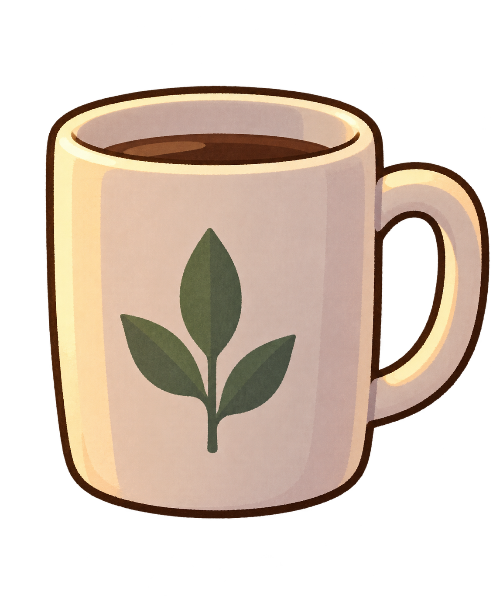
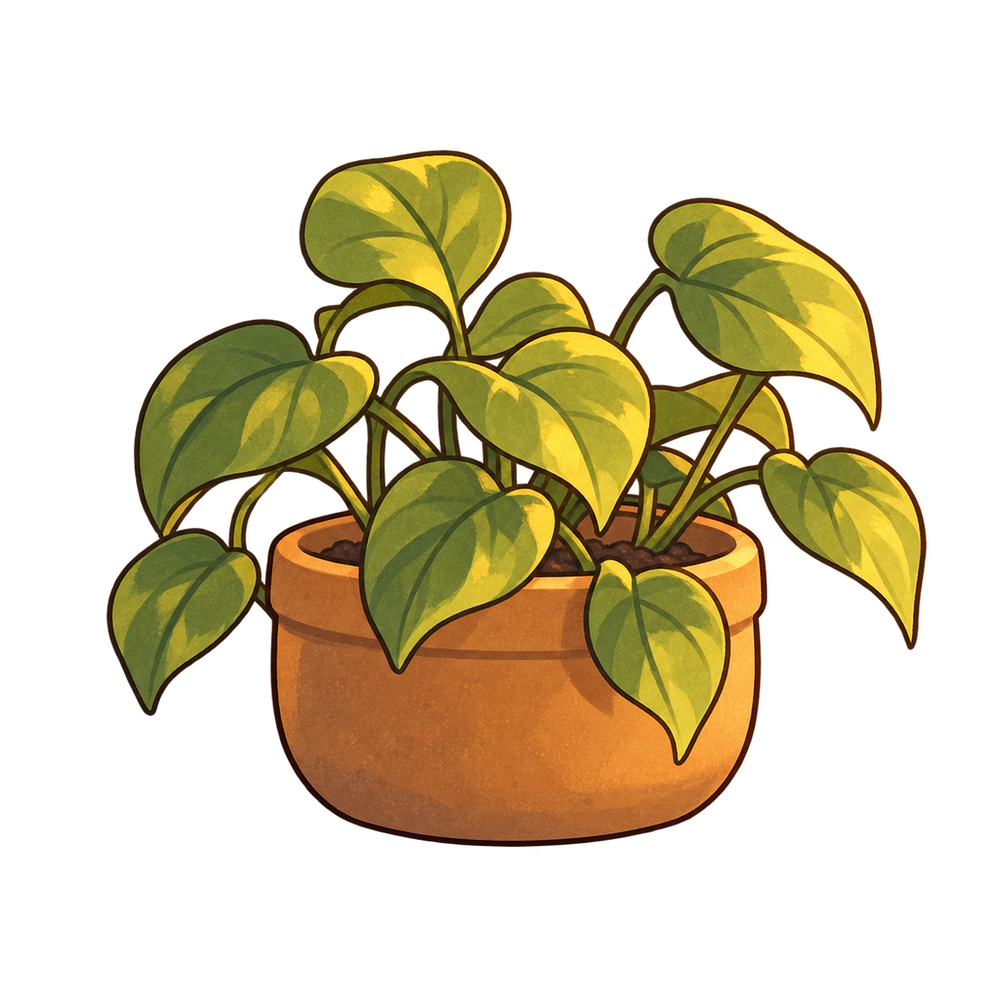
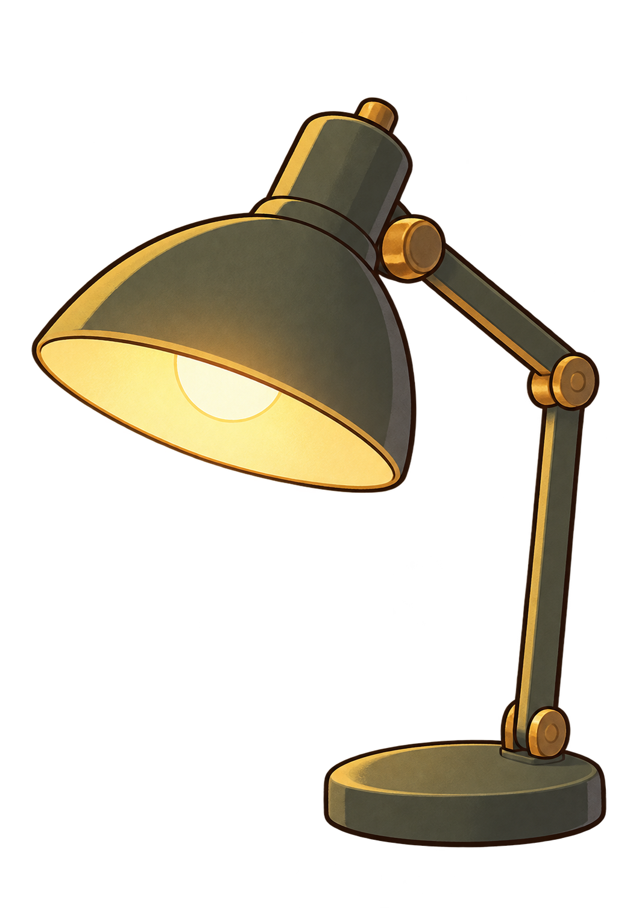
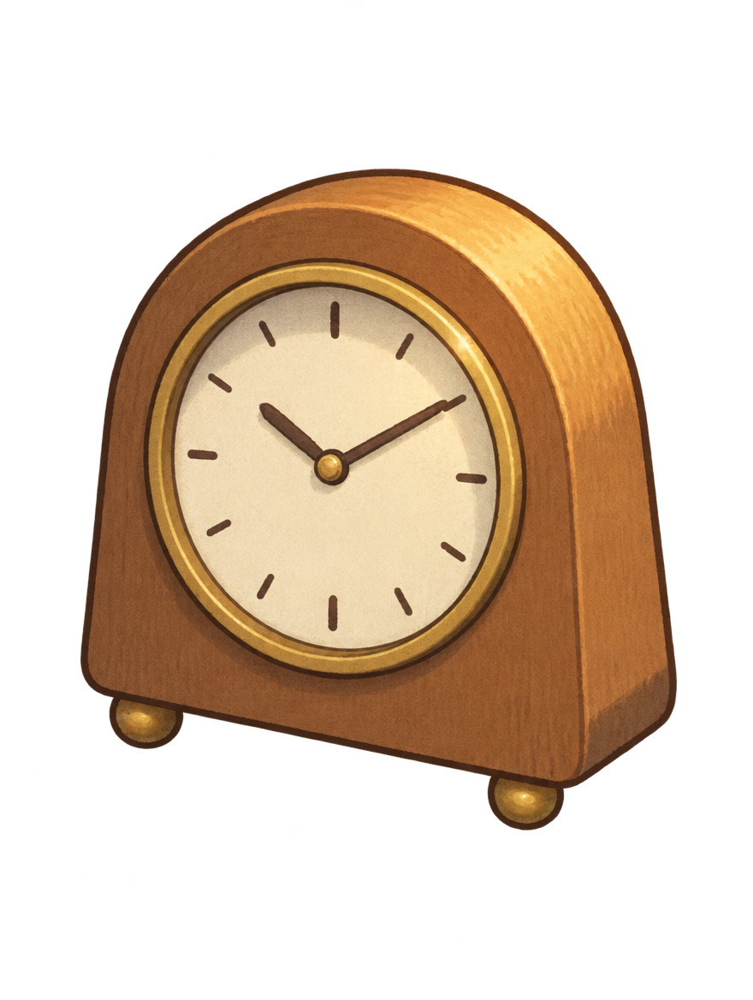
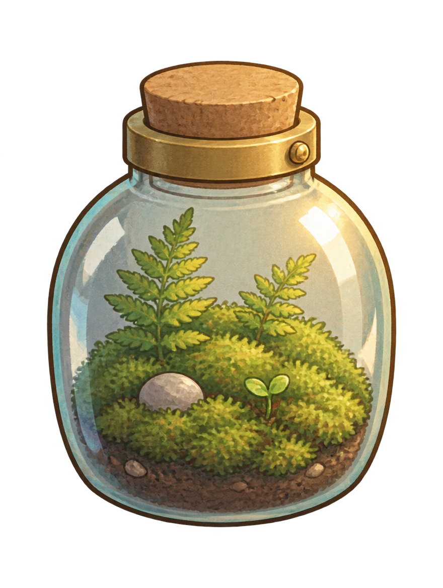

지금은 화분(첫 완료)·머그컵(60분) 뒤에 다음 목표가 보이지 않아요. Forest는 나무, Focus Friend는 뜨개질한 양말로 “쌓이는 것”을 늘 보여줍니다. 이미 그려 둔 시계·테라리움 시안(docs/design/prop-drafts)을 로드맵으로 이어 붙여 다음 목표를 늘 보이게 합니다.





지금은 완료 알림만 있고, 집중 중에 홈으로 나가면 남은 시간을 볼 수 없어요(소리를 켰을 때만 재생 알림이 뜸). Focus Friend는 최근 위젯을 추가했고, Forest 사용자 리뷰에도 “잠금화면에 남은 시간”을 원하는 요청이 있습니다.
Forest는 태그별 시간 분포, 열품타는 과목별 타이머가 핵심 기능이에요. 지금 기록은 “얼마나”만 있고 “무엇을”이 없어, 주간·월간 통계가 금방 단조로워집니다. 시작 흐름은 그대로 두고 태그는 선택 사항으로.
Forest는 앱을 나가면 나무가 죽고, Focus Friend는 친구가 슬퍼합니다. 이게 경쟁 앱들의 핵심 동기 장치예요. 우리는 지금 앱 밖에 있어도 아무 반응이 없어요. 벌을 주지 않는 Deskmate 톤으로: 잠깐 나가면 알림으로 부르고, 돌아오면 반겨줍니다.
스터디 계정·스터디윗미 문화에서 “오늘 공부 인증” 이미지는 가장 흔한 공유 형태예요. Focus Friend도 SNS 확산으로 차트 1위를 했습니다. 우리 일러스트는 그대로 예쁘니, 완료 후 인증 카드 한 장으로 광고비 없는 유입 경로를 만듭니다.